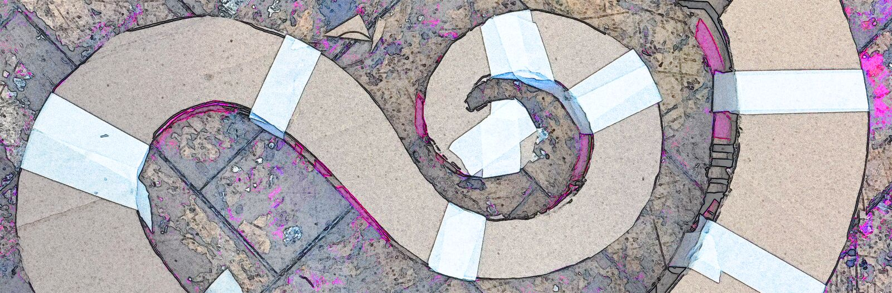

Fine Art 3D — Cardboard Orchestra
Unit 1, Week 4B

Research
Musical instruments fascinate me as sculptural objects because their forms are primarily dictated by function: they must produce particular sounds, pitches, and timbres, yet so many are extraordinarily beautiful structures in their own right. There is a wonderful resonance between beautiful sound and beautiful form. The Follyphone playfully challenges this relationship: regardless of whether it produces music, we immediately recognise it as a musical instrument. What is the visual grammar of a musical instrument, and what exactly is the Follyphone borrowing from it?
Process
- 122
- 123
- 124
- 125
- 126
- 127
- 142
- 143
- 144
Reflection + Evaluation
- This project made me realise that designing assignments for art students is an art in and of itself. It’s a brilliant brief: it encourages everyone to draw on a shared visual vocabulary—what makes something recognisable as a musical instrument?—while leaving room for individual interpretation.
- It also made me think more seriously about the nature of materials. We were “just” working with cardboard, but, as it turns out, there are many different kinds: some bend more easily, others are better suited to rigid construction, and even their colours and textures vary enormously. Within what seemed like a very simple restriction, I discovered a surprising amount of depth. I imagine this is true of almost any material. You really have to spend time playing with it to understand its properties and limitations—what it does, what it resists, and what you can coax out of it.
- A smaller observation, but one that made me laugh to myself: I have quite a few architect friends, and they’ve told me there’s a good reason you don’t see too many curves in buildings out in the wild. Curves are difficult to work with, and they posed quite a structural challenge for me too. A simple thing, intellectually speaking, but I came to understand it through my hands, which is a different thing entirely. When you’re constructing something, rectilinearity makes life easy; anything that departs from it demands more thought.